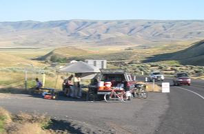

and sponsoring unsupported endurance riding

10.04.06 2007 Volunteers NeededVolunteers are a big part of what makes SIR a successful organization. Many will tell you that supporting a ride is every bit as fulfilling and sometimes more challenging than doing the ride itself. It's also a way for friends or family members to participate in randonneuring and get a feel for what it's all about. Most brevets have a pre- ride so that you and the organizer can still do the ride. There will always be an experienced volunteer available to help orient you with what needs to be done.

Rattlesnake Hills Water Stop
Here's a list of current volunteering opportunities...
- NW Crank
Friday, April 27, 2007
3 people needed to provide support out on the course - NW Crank
Saturday, April 28, 2007
3 people needed to provide support out on the course - NW Crank Sunday, April 29, 2007
3 people needed to provide support out on the course - NW Crank Monday, April 30, 2007
2 people needed to provide support out on the course
2006 Volunteer Coordinators
- RBA - Mark Thomas
- Treasurer - Eric Vigoren
- Webmaster - Albert Meerscheidt
- Newsletter - Peter Beeson
- Jerseys - Paul Johnson
- Land's End - Bill Dussler
- Membership Support - Eric Vigoren
- Socks - Amy Pieper
- Photo Editor - Tom Norwood
- Publicity/Outreach - Needs a volunteer
- Bike Expo - Paul Johnson
- Permanents - Mark Roehrig
- Route Archiving - Eric Vigoren
Let us know what you can help with!